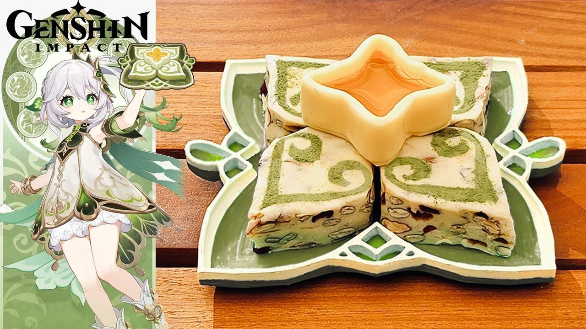

Halvamazd Recipe

Ingredients
- 40g Plant sterols margarine (instead of butter)
- 200g Marshmallow
- 100g Skimmed milk powder
- 50g Almonds
- 50g Pumpkin seeds
- 50g Dried cranberries
- 50g Dates
Steps
Chop dates.
Cut marshmallows into smaller sizes.
Bake almonds and pumpkin seeds at 160°C for about 10 minutes.
Place plant sterols margarine in a non-stick pan. Cook over low heat until it is melted.
Add marshmallows and stir until all the marshmallows have dissolved.
Add the milk powder and mix until smooth.
Turn off the heat.
Stir in all the nuts and dried fruits quickly until well combined.
Put the mixture on baking paper and press gently.
Refrigerate the nougat for at least 60 minutes.
Take the nougat out from the refrigerator.
Cut up the nougat into small bars.
Ready to serve.
You can also shape the nougat into the desired figure.
Use green tea powder for decoration.
Place the candies on a nice plate.
Use plain nougat to make the honey container.
Micro-ware the bottom piece for a few seconds, so it will become soft and easy to stick with the frame. Pour honey into the candy container.
Put the honey container on top of the decorated candies.
CLICK IMAGE FOR VIDEO